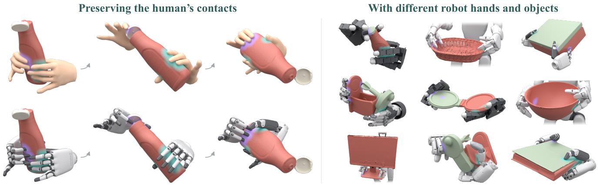
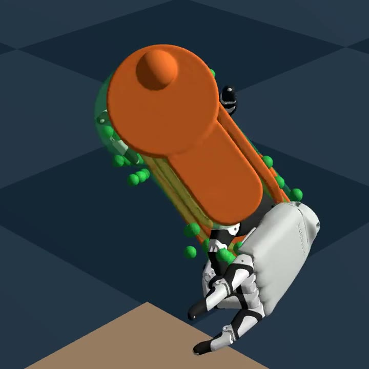
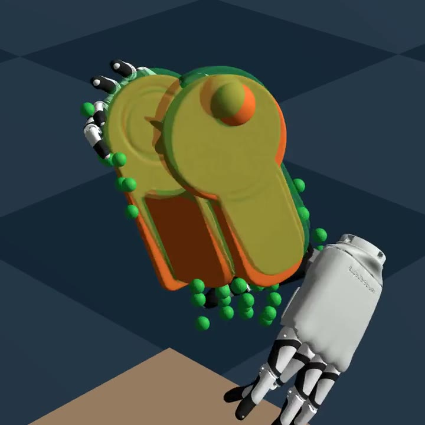
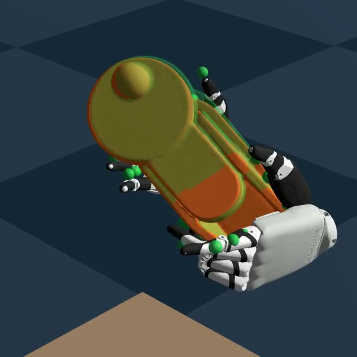
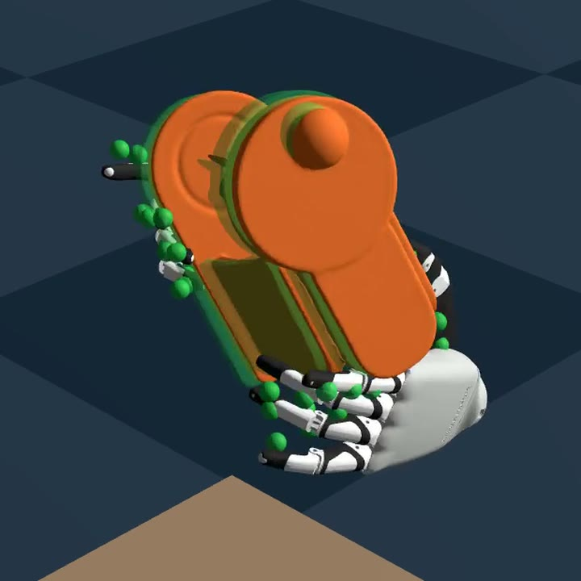
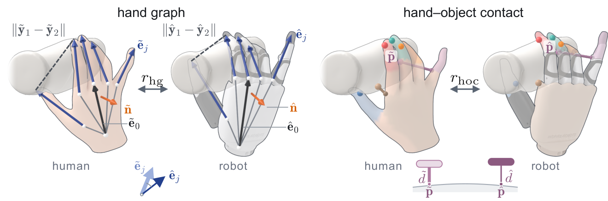

Abstract
Human demonstrations provide a rich source of bimanual dexterous skills, yet transferring them to robot hands remains challenging. Existing methods primarily optimize object trajectory tracking, often overlooking how human hands interact with the object. Even with accurate tracking, robots may contact incorrect object parts or slide their fingers, resulting in unstable manipulation. We present DexDuet, a framework that learns contact-preserving bimanual dexterity from a single human demonstration. DexDuet employs two interaction rewards to preserve human hand-object configurations and contacts. To enable coordinated manipulation, we factorize the bimanual policy into two weight-sharing per-hand policies that condition on each other's states. We further propose assisted reference-state initialization (A-RSI), an adaptive curriculum that adjusts object assistance and training starts across demonstration segments to overcome difficult manipulation phases. Across four benchmarks spanning three simulators and five robot embodiments, DexDuet improves object-tracking ADD-AUC by 11–41 points over the corresponding baselines while consistently achieving better contact preservation. Notably, among 122 paired runs with comparable object-tracking accuracy, DexDuet preserves the human's contacts better in 117 cases.
Two robot hands learn a skill from one human demonstration, and hold the object where the human does
Methods that transfer human demonstrations to dexterous robot hands mostly reward the robot for moving the object along its demonstrated trajectory. A robot can do that and still touch the wrong parts of the object, or let its fingers slide. DexDuet trains the hands to preserve the human's hand-object contacts as well.

Side by side with the baselines: DexMachina, SPIDER and CHORD
DexMachina's released checkpoints (left) and DexDuet (right), in real time, with the human demonstration in green. Each clip is the run with the median ADD-AUC of five, not a hand-picked one.
Inspire Ketchup-300 shows the best run of each method instead: the median DexDuet run drops the bottle in the last frames.
A Unitree G1 with Dex3 hands on whole-body episodes of the Video to Data (V2D) Challenge. CHORD (PPO), the challenge's baseline, and DexDuet are trained for each episode with the same budget.
The eight episodes with the largest ADD-AUC gap among those in which DexDuet passed every success check. Green outline: the target object pose.
SPIDER (our reproduction) and DexDuet with Inspire hands on the seven ARCTIC clips of the SPIDER suite.
Replays of the evaluated rollouts at half speed. The SPIDER clips are a rerun; on Box and Mixer it scores lower than the run in the table.
DexDuet tracks the object better on every benchmark, and preserves contacts better even at equal tracking
Contact-AUC
Our new metricWhile a human hand holds a part of the object, Contact-AUC measures how far the robot hand's contact points drift on that part. The less they drift, the higher the score.




Green: the human demonstration. Simulator frames of Mixer-170, a moment apart. Both runs track the object equally well, but only DexDuet stays on the part the human holds. Scored like ADD-AUC, over drift thresholds of 0.5 to 5 cm; a hold without contact scores 0.
Mean over demonstrations, in % (MPPE in cm). Baselines and protocols differ per benchmark, so numbers are not comparable across benchmarks.
At equal tracking, DexDuet preserves contacts better
Pairs of a DexDuet and a DexMachina run on the same hand and demonstration whose ADD-AUCs differ by at most 3 points. Each dot is one pair; on the right, pairs won by DexDuet vs. DexMachina, and DexDuet's median Contact-AUC gain.
DexDuet has the higher Contact-AUC DexMachina higher
DexDuet keeps holding the object after the demonstration ends
Share of rollouts that keep the object within 5 cm of its final pose for 3 s after the last frame, in %.
DexMachina DexDuet
Every component contributes
Ablations on the DexMachina suite with Inspire hands (seven demonstrations, three seeds). Removing either interaction reward lowers Contact-AUC much more than ADD-AUC; without the per-hand policy, tracking is less precise in 20 of 21 paired runs; replacing A-RSI with a single-level curriculum needs 20% more updates.
kept removed or replaced · red numbers: points below DexDuet (a) · Updates: mean PPO updates until training stops
| Variant | Per-hand policy | A-RSI | Hand graph reward | Contact reward | ADD-AUC ↑ | Contact-AUC ↑ | Updates ↓ |
|---|
All metrics on the four benchmarks
| Robot | Robot / Method | ADD-AUC ↑ | SP-SR ↑ | MP-SR ↑ | MPPE ↓ | Contact-AUC ↑ |
|---|
All metrics in % except MPPE (cm). Shading runs from the lowest to the highest value of each column within a benchmark.
DexDuet adds a per-hand policy, two interaction rewards and a per-segment curriculum
DexDuet is trained with reinforcement learning in simulation. It keeps the usual rewards for tracking the object and imitating a retargeted reference motion, and adds three components.
Factorized per-hand policy
A single policy for both hands ignores that two mirror-symmetric hands act on one object. Independent policies cannot share what they learn.
- Two per-hand policies share one network, so one set of parameters learns from the experience of both hands.
- Each policy observes its own hand and its partner's state, so each hand can adapt to its partner.
- PPO's ratio is clipped per hand: a sample on which one hand changed too much no longer stops the other hand from learning.
Two interaction rewards
Both compare each robot hand with the human hand itself, relative to the object, instead of only with a retargeted reference.
- The hand graph reward matches the palm normal, the palm and finger directions, and the gaps between fingertips: how the hand is oriented and opened around the object.
- The hand-object contact reward compares, for the palm and each finger, the distance to each object part and the closest point on it: where the hand touches.

Assisted reference-state initialization (A-RSI)
A hard phase in the middle, such as a handover, stalls a curriculum that lowers one assistance level for the whole demonstration.
- Each segment has its own assistance level, lowered where the policy succeeds and raised again where it fails.
- Episodes start from states the policy has reached, more often in and just before the failing segments.
- A decreasing ceiling brings every level to zero, so the final policy runs unassisted.
Scroll to play through training, or pick a moment below. The bars illustrate the mechanism; they are not a training log.
Equal tracking, different contacts: can you tell which robot is DexDuet?
Two policies for Inspire hands, trained on the same demonstration with the same seed, track the object about equally well (ADD-AUC within 3 points). One is DexDuet, and the other was trained without one or both interaction rewards. Watch the fingers, pick a robot, and see which is which.
The learned motions run on real robots
DexDuet's simulated rollouts are replayed open-loop on two real robot systems.